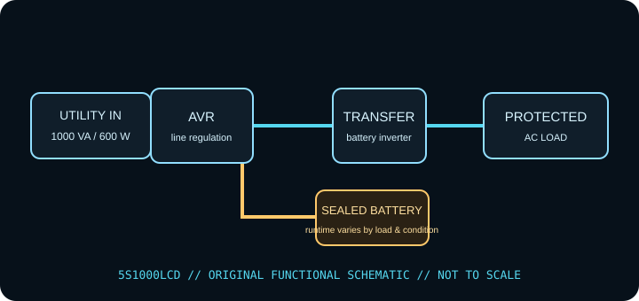

[ LINE-INTERACTIVE UPS // IDENTIFIED MODEL ]
Eaton 5S1000LCD
Eaton line-interactive AVR UPS, rated 1000 VA / 600 W. This record describes the identified regional model only. Check the complete nameplate, hardware revision and matching manufacturer documentation before installation or load selection.

ARCHIVAL IDENTIFICATION: Record complete SKU/suffix, input/output labels, serial/date code, hardware revision, battery type/age, accessories, test conditions and manual revision. Similar model names do not establish electrical equivalence.
Exact model specifications
| Manufacturer / exact model | Eaton 5S1000LCD (North American model record; verify complete SKU, revision and serial/date label). |
|---|---|
| Topology | Line-interactive UPS with automatic voltage regulation (AVR); supported input fluctuations may be corrected without battery transfer. This is not a standby-only or online double-conversion unit. |
| Capacity / input | 1000 VA / 600 W; 120 V AC nominal; North American unit with NEMA 5-15P input. The Eaton specifications list an accepted input range; check the precise variant and current documentation. VA and W are separate limits; stay under both. |
| AC output / waveform | 120 V AC nominal for the North American variant; modified (simulated) sine wave on battery; Eaton describes 5S as a modified-sine output family. AVR is line-interactive. |
| Outlets / load assignment | Ten NEMA 5-15R receptacles; use Eaton’s exact outlet-group map to distinguish battery-backed and surge-only sockets for this hardware revision. |
| Battery chemistry / service | Internal maintenance-free sealed lead-acid battery. Battery servicing/replacement is model-specific; do not open the energized enclosure or install an unapproved pack. |
| Runtime / test conditions | Use Eaton’s 5S1000LCD load-versus-runtime chart for the connected wattage; Eaton reference data shows runtime falls to only a few minutes near the 600 W ceiling. Age, temperature and battery condition change actual runtime. Runtime tests should record connected watts, charge state, battery age/health, temperature and test date. |
| Host signaling / software | USB HID host interface; Eaton UPS Companion monitoring/shutdown support is documented for this family. Check Eaton’s current host/software compatibility listing for the operating system in use. |
| Load compatibility | 120 V loads inside the 1000 VA / 600 W limits and compatible with the documented output waveform. Allow for startup load; do not assume compatibility from a connector fit alone. |
Safety, service & limits
- Use only with the grounded voltage/frequency and environment allowed by the complete unit label and current model manual. Never defeat grounding or daisy-chain UPS outputs.
- Do not connect heaters, laser printers, motors or other high-inrush loads unless the manufacturer expressly permits them and their steady-state and startup demand remain within the UPS limits.
- Do not open an energized UPS or work on battery terminals. Sealed lead-acid batteries can deliver destructive fault current; avoid short circuits, damaged/swollen/leaking cells and unapproved replacements. Follow the manufacturer isolation, service and recycling directions.
- Remove damaged equipment from service if the case, cord, plug, grounding, outlet, battery or indicator shows heat, swelling, leakage, cracking, odor, corrosion or other fault. Follow the maker’s safe shutdown guidance.
- Keep ventilation clear, protect the unit from liquid and excessive heat, and test host shutdown and runtime under a controlled load. Battery backup is finite and is not a substitute for code-compliant wiring or an independent data backup.
Manufacturer sources and documentation
- Eaton — 5S1000LCD product informationManufacturer information for the named model; confirm revision and regional suffix on the actual unit.
- Eaton — 5S UPS technical specifications (PDF)Manufacturer information for the named model; confirm revision and regional suffix on the actual unit.
- Eaton — 5S1000LCD runtime chartManufacturer information for the named model; confirm revision and regional suffix on the actual unit.
- Eaton Knowledge Hub — 5S battery-mode waveform FAQManufacturer clarification that the 5S series uses modified sine-wave output on battery.